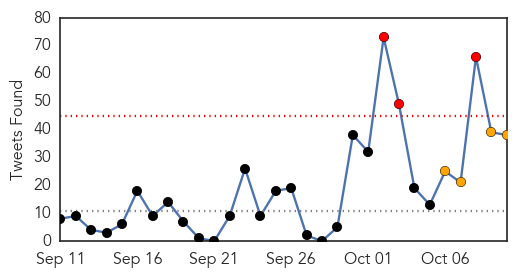
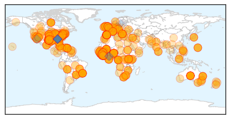
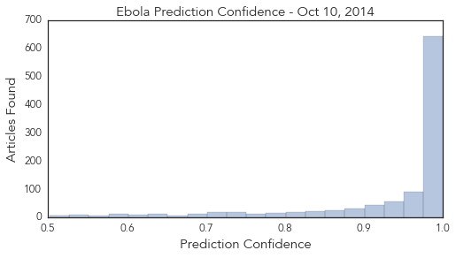

Ebola
30-Day Web Trend
8 alerts, 0 warnings

30-Day Twitter Trend
3 alerts, 4 warnings

Article Locations
Article Confidences
Top Articles:
- 1.000
- The nightmare Ebola scenario that keeps scientists up at night
- 1.000
- Las Vegas Ebola scare holds airplane on tarmac
- 1.000
- Aid groups rally to fight Ebola in Africa
- 1.000
- State, local health officials confident of Ebola response plans
- 1.000
- Las Vegas sounds false alarm as global Ebola fears spread
- 1.000
- Ebola fears spread as 4,000 killed in West Africa
- 1.000
- Las Vegas sounds false alarm as global Ebola fears spread - World
- 1.000
- US warns Ebola could become next AIDS amid fears for Spanish nurse
- 1.000
- Latest Ebola News: US military planes reach Ebola epicentre
- 1.000
- Ebola: Why the experts are scared
- 1.000
- Dallas deputy tests negative for Ebola as fears grow in U.S.
- 1.000
- Fears Ebola will spread globally
- 1.000
- Ebola crisis: Death toll tops 4,000 as WHO reveals only a quarter of $1 billion financial aid target raised
- 1.000
- U.S. Troops Arrive in Ebola-Ravaged Liberia
- 1.000
- Public health experts taking Ebola precautions seriously
- 1.000
- Ebola could become next Aids, US warns
- 1.000
- Zimbabwe hospital closed to monitor suspected Ebola case
- 1.000
- Beer and tobacco ‘could cure Ebola’
- 1.000
- What You Need to Know: How the Ebola Virus Is Spread
- 1.000
- Ebola virus: What are the symptoms and how does it spread?
- 1.000
- US warns Ebola could become next Aids - World News
- 1.000
- Las Vegas sounds false alarm as global Ebola fears spread By Reuters
- 1.000
- Ebola crisis: Man in Brazil hospitalised with symptoms of deadly virus
- 1.000
- Ebola outbreak: Death toll surpasses 4,000 mark
- 1.000
- Uganda: 150 People 'Being Monitored for Marburg, the Ebola-like Virus'
- 1.000
- US warns Ebola could become next AIDS
- 1.000
- WHO: More than 4,000 people now dead in Ebola outbreak
- 1.000
- Ebola: More fears, more measures as first patient diagnosed in the U.S. dies
- 1.000
- New York hospitals have been sending in actors with FAKE Ebola symptoms
- 1.000
- Ebola test for missionary in Brazil who has travelled from Guinea
- 1.000
- 'There may be other cases': U.S. Secretary of health says there are likely more cases of Ebola on American soil and that airport screening from departure countries is essential in preventing the disea
- 1.000
- Las Vegas Ebola scare holds airplane on tarmac
- 1.000
- Ebola outbreak: Get up to speed
- 1.000
- Ebola is 'entrenched and accelerating' in West Africa
- 1.000
- How is Ebola being treated on the ground?
- 1.000
- Las Vegas Ebola scare holds airplane on tarmac
- 1.000
- Las Vegas sounds false alarm as global Ebola fears spread
- 1.000
- Las Vegas sounds false alarm as global Ebola fears spread
- 1.000
- ‘Our people are dying’: A plea for more aid for Ebola hot zone
- 1.000
- How Cutting-Edge Medicine Might Have Spared Us the Ebola Epidemic
- 1.000
- US warns Ebola could become next AIDS amid fears for Spanish nurse
- 1.000
- Americans increasingly anxious about Ebola
- 1.000
- Ebola Could Become Next AIDS
- 1.000
- Ebola advances in West Africa
- 1.000
- Panic Over Ebola: Airline Strikes, Banned Flights, Experimental Drugs
- 1.000
- WHO: Ebola deep-rooted in worst affected countries
- 1.000
- Ebola fears spread as Spanish nurse worsens
- 1.000
- Brazil announces its first suspected Ebola case; death toll tops 4,000
- 1.000
- Aid groups rally to fight Ebola in Africa
- 1.000
- Isolating Ebola-affected nations could worsen outbreak, experts say
Showing top 50 articles...
Top Tweets:
- 0.996
- Ebola virus dies through drying.
- 0.929
- There have no reports of pets becoming sick with Ebola or playing a role in transmission of Ebola to humans.
- 0.913
- Ebola virus disease case definition for reporting in EU http://t.co/uA4qURV6EH
- 0.903
- RT: @kelseysuelutz There have no reports of pets becoming sick with Ebola or playing a role in transmission of Ebola to hum…
- 0.889
- Ebola Zaire strain.
- 0.853
- The Ebola epidemic is not just a health crisis, it is a complex, multidimensional crisis @UNMEER Head Banbury to UNGA
- 0.853
- RT: Today's broadcast: Epidemiologists Anne Purfield & Michelle Dynes about responding to Ebola outbreak in Sierra Leone http:…
- 0.833
- Studies show corpses very contagious for weeks, poss. months, bc Ebola virus can survive. Safe burial/cremation key
- 0.807
- WHO: Ebola death toll above 4,000 http://t.co/uTZm7hM8Wm. We must end the outbreak. TackleEbola
- 0.770
- Ebola healthcare workers wear protective gear to protect themselves from bodily fluids not because Ebola is airborne.
- 0.769
- MT@Arjan_Hehenkamp: ebola 'not epidemic or unprecedented' said WHO in April: http://t.co/Bd66aa4TXZ 'localized','sporadic cases' failure
- 0.768
- Why I don't support a travel ban to combat Ebola outbreak http://t.co/0nKfK1jj60
- 0.750
- The ominous math of the Ebola epidemic http://t.co/DyWC1scRkv
- 0.745
- No. Ebola is not a respiratory disease like the flu, so it is not spread through the air. http://t.co/1OsrUzqssF
- 0.745
- No. Ebola is not a respiratory disease like the flu, so it is not spread through the air. http://t.co/1OsrUzqssF
- 0.745
- No. Ebola is not a respiratory disease like the flu, so it is not spread through the air. http://t.co/1OsrUzqssF
- 0.741
- Lessons for Ebola from 2005 Marburg outbreak in Angola, from for Reuters http://t.co/XPhos54Amr
- 0.717
- Ebola spreads by contact w/ sick person’s blood/body fluids, contact w/ contaminated objects, or infected animals (bushmeat).
- 0.717
- Ebola spreads by contact w/ sick person’s blood/body fluids, contact w/ contaminated objects, or infected animals (bushmeat).
- 0.714
- RT: Remember: Ebola virus not an airborne virus, but there is a *minor* risk of it being propelled across a short space http://t…
- 0.710
- How to treat a baby with Ebola? From the's The Ebola Ward series of reports http://t.co/1d2srEoHdr
- 0.694
- RT: Why I don't support a travel ban to combat Ebola outbreak http://t.co/0nKfK1jj60
- 0.694
- RT: Why I don't support a travel ban to combat Ebola outbreak http://t.co/0nKfK1jj60
- 0.694
- RT: Why I don't support a travel ban to combat Ebola outbreak http://t.co/0nKfK1jj60
- 0.650
- Ebola not contagious until symptoms appear. Transmitted thru contact w/body fluids from infected http://t.co/0SPbWJTMly
- 0.644
- Isolating countries will make Ebola response harder & create greater humanitarian/health care emergency http://t.co/0nKfK1jj60
- 0.633
- RT: Fox -- CDC Chief: Why I don't support a travel ban to combat Ebola outbreak http://t.co/MX87vI0ce8
- 0.624
- Ebola death toll passes 4000, says WHO http://t.co/xi2LBMnSyn
- 0.614
- Bushmeat, or wild animals caught for food, is a source of Ebola in Africa.
- 0.588
- RT: Isolating countries will make Ebola response harder & create greater humanitarian/health care emergency http://t.co/0nKf…
- 0.587
- How I Prevent Ebola - Ebola ايبولا EbolaOutbreak エボラ PatientSafety Healthcare news - http://t.co/LzJMn3yJ6i - http://t.co/caHeQ8vOvg
- 0.585
- Ebola numbers continue to climb as officials say that for every 4 known cases, about 6 more go unreported. http://t.co/GzMxj2i2np
- 0.556
- No. Bushmeat, or wild animals caught for food, is a source of Ebola in Africa. Bushmeat includes fruit bats, monkeys, and apes.
- 0.552
- From: free access to Ebola hub to assist health workers working to bring this outbreak to a close. http://t.co/krPaQoQqPu
- 0.524
- Risk low for Ebola unless direct contact made w/ infected, symptomatic person’s bodily fluids. http://t.co/0SPbWJTMly
- 0.507
- RT: VOA: CDC Head Still Confident Ebola Outbreak Can Be Stopped: Thousands of kilometers from the communit... http://t.co/XAK…
- 0.504
- Celebrity response to Ebola crisis has been disappointing, @guardian columnist says http://t.co/93NcpPvumF
- 0.503
- The highest priorities are Ebola treatment centres with skilled managers and medical personnel. - @UNMEER Head Banbury to UNGA
Unknown
30-Day Web Trend
0 alerts, 0 warnings

30-Day Twitter Trend
1 alerts, 0 warnings

Article Locations

Article Confidences

Top Articles:
- 0.997
- Health officials urge caution vs. uncommon virus - MariettaTimes.com
- 0.985
- 4 Things We've Learned About Enterovirus D68, And 1 Mystery
- 0.980
- WSU Spokane dispenses free flu vaccine at health fair
- 0.975
- Hand, foot and mouth disease hits 3 Henrico schools
- 0.969
- Multiple enterovirus-68 cases confirmed in Oregon
- 0.947
- Runner Getting Rabies Test After Bat Exposure at Mud Run
- 0.926
- 'Mommy my hands are going numb': Mother reveals hell of seeing her daughter, 5, succumb to enterovirus overnight to the point where she can no longer speak or move
- 0.924
- Maine Documents First Human Case of EEE
- 0.917
- Chicago Tribune
- 0.917
- Chicago Tribune
- 0.917
- Chicago Tribune
- 0.917
- Chicago Tribune
- 0.917
- Chicago Tribune
- 0.917
- Chicago Tribune
- 0.917
- Chicago Tribune
- 0.917
- Chicago Tribune
- 0.917
- Chicago Tribune
- 0.917
- Chicago Tribune
- 0.917
- Chicago Tribune
- 0.917
- Chicago Tribune
- 0.917
- Chicago Tribune
- 0.917
- Chicago Tribune
- 0.917
- Chicago Tribune
- 0.917
- Chicago Tribune
- 0.917
- State Ebola test negative for North Texas deputy
- 0.916
- Health Fair 11 launches the next evolution in flu shot clinics!
- 0.909
- Enterovirus sickens three O.C. children
- 0.882
- KHGI-TV/KWNB-TV/KHGI-CD-Grand Island, Kearney, Hastings
- 0.870
- Doctors urge elderly get PCV as flu season arrives
- 0.868
- Motsoaledi: No immediate SA ebola threat
- 0.866
- Subtropical Storm Fay forms in Atlantic, heads for Bermuda
- 0.866
- A section of the giant pipes used for channelling steam to the generating turbines is pictured at the Olkaria Geothermal power plant
- 0.846
- Polio Surfaces Among Pakistani Immigrants in Khost
- 0.829
- More babies test positive for tuberculosis
- 0.827
- Clinicians Explore EV-D68, Paralysis Link
- 0.826
- New York City To Mandate Flu Shots For Preschool Children
- 0.815
- South Sudan: Malaria and Typhoid Cases Hit Wau Civil Hospital
- 0.800
- Parasite makes women vulnerable to HIV - KwaZulu-Natal
- 0.755
- Mainer diagnosed with EEE virus
- 0.755
- KRNV, Reno, NV
- 0.735
- 5-Year-Old Girl Paralyzed with Enterovirus Has Been on Ventilator for 3 Weeks
- 0.714
- Scoop InfoPages
- 0.708
- Malaria and Typhoid Cases Hit Wau Civil Hospital - South Sudan
- 0.702
- New Awards to Support Rural Enrollment in Health Insurance Marketplaces (HRSA
- 0.693
- HIV's spread traced back to 1920s Kinshasa
- 0.690
- Patients in Wau face increased risk of malaria, typhoid
- 0.679
- How bilharzia is hampering SA’s Aids fight
- 0.662
- Potential flu vaccine shortage impacted pediatrician offices
- 0.654
- Hospital Places Bans Into Effect Over Enterovirus Concerns
- 0.653
- Lyme Patients Infiltrate IDWeek Medical Conference, Call on IDSA Members for Help
Showing top 50 articles...
Top Tweets:
- 0.745
- enserio esto me esta pasando? una chica acaba de bajarse de su carro a buscar a chic@ en la escuelita pero dejo en el carro a otro menor 😡😰😱
- 0.634
- Cayey fue la mejor contestación de todas... MUPR15 ganar este concurso es un quitao'
- 0.583
- RT: "No somos Maniquis, somos mujeres" Ay cabrona gracias de corazón. Yo pensaba que eran Alcapurrias caminando en tacos y ser…
- 0.557
- Bayer compra semillera paraguaya y busca aumentar presencia en el mercado de soja: La alemana Bayer sigue de... http://t.co/0O99SEijmO